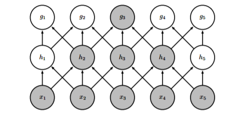
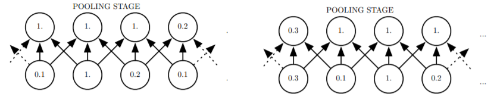
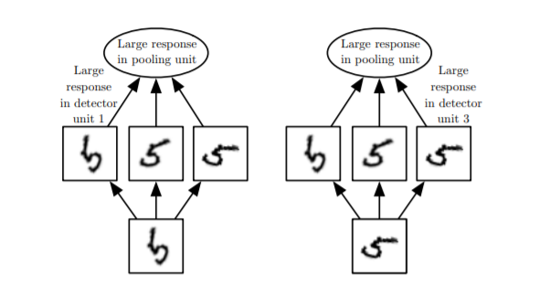

4. cnn
1. 基础运算
(1). 卷积
卷积的动机在于以下三个重要思想:
- 稀疏交互 (
sparse interaction ) 和 参数共享 (parameter sharing ): - 传统的全连接网络中，每个输出单元与每个输入单元都产生交互，而且权重矩阵的每个元素也只使用一次。
- 稀疏交互受启发于生物学中的视觉系统结构，视觉皮层的神经元就是局部接收信息的，它只响应特定区域的刺激；图像本身也是局部像素之间关联紧密，较远的像素关联较弱。因此，
CNN 先对局部进行感知，然后在更高层将局部的信息综合起来得到全局的信息；每个卷积核对应提取一种特征，因此参数是共享的。

如图，深层的神经元具有更大的receptive field 。 - 如果有 $m$ 个输入和 $n$ 个输出，矩阵乘法需要时间 $O(m\times n)$，而稀疏交互需要 $O(k\times n)$，其中 $k$ 为连接数；由于输入共享参数，只需要 $k$ 个参数的存储空间。
CNN 通过这种方式提升了特征提取的效率。 - 等变表示 (
equivariant representation ) - 如果 $f(g(x))=g(f(x))$，就说 $f$ 对 $g$ 具有等变性
- 卷积运算对图像的平移变换是等变的
- 如果有 $m$ 个输入和 $n$ 个输出，矩阵乘法需要时间 $O(m\times n)$，而稀疏交互需要 $O(k\times n)$，其中 $k$ 为连接数；由于输入共享参数，只需要 $k$ 个参数的存储空间。
CNN 通过这种方式提升了特征提取的效率。
(2). 池化
在
- 特征降维，减小计算量
- 引入了近似平移不变性
- 平移不变性是很有用的性质，例如，我们希望只关心原图中特征是否出现而不关心它出现的位置，即使出现位置改变不影响识别效果
- 由图可知，最大池化引入了近似的平移不变性: 将输入右移一个单位，但上面的部分只有一半的像素改变
 - 通过对不同特征图共同池化，可以学得对其他操作的不变性。

如图可学得对旋转操作的不变性。如果某个形态的数字 $5$ 的特征被识别出，相应的特征被激活，就会在最终的最大池化反映出来。